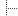
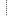
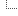

| UASR script util/cfg.itp |
|
| General | Signature | : | ||
| Author | : | Matthias Wolff |
Synopsis
Utility functions: UASR configuration files
UASR Configuration Files
UASR main programs (extension xtp) are complex and require far
more settings than you could reasonably pass through a command line. Therefore
the settings are collected in configuration files. These files contain ASCII
text and are formatted like Java properties files (see remarks below). They basically provide a list of key-value
pairs.
The first command line argument of virtually all UASR main programs
specifies such a configuration file (which we call "custom config file" in the
following). You will not need to customize most of the settings but get
along well with the defaults. To keep your custom config files short, these
defaults are collected in one file
(<uasr_home>/setup/default.cfg) which is always loaded
automatically. Key-value pairs in the custom config file passed through the
command line override the default settings. Single keys may be altered right
on the command line using up to ten
-P<key>=<value> command line options. These are
supported by all UASR main programs and have the highest priority.
Configuration Keys
| Key | Type | Default | Description |
|---|---|---|---|
uasr.customize | string | Custom include script (path absolute or relative to script accessing the key) | |
uasr.db | string | "vm" | Data base name |
uasr.db.include | string | Database dependent include script (absolute path) | |
uasr.exp | string | "" | Experiment code |
| Signal and feature settings | |||
uasr.sig.aquant | number | 16 | Signal quantization resultion [bits] |
uasr.sig.gain | number | 1.0 | Gain factor (-SIG_import_raw only!) |
uasr.sig.srate | number | 16000 | Signal sampling rate [Hz] |
uasr.spp | string | "none" | Signal preprocessing type"none" - No preprocessing "preemph" - Preemphasis "residual" - Residual signal |
uasr.fea.f0 | boolean | FALSE | Extract fundamental frequency |
uasr.fea.ext | string | "mf" | Extension of primary feature files |
uasr.fea.pm | boolean | FALSE | Pitch synchroneous primary feature analysis |
uasr.fea.pm.level | number | 2.0 | Voices/voiceless threshold (see dLabPro class PMproc) |
uasr.fea.savecompressed | boolean | TRUE | Compress feature files to short int |
uasr.fea.labidx | boolean | FALSE | Add label index to label name in -SIG_label (see Label component format) |
| Primary feature extraction settings | |||
uasr.pfa | string | "MEL" | Primary feature analysis type"none" - No primary feature extraction "ext" - External feature extraction "CP" - Cepstrum (including MFCC) --> CPproc "FFT" - Fast Fourier transform --> FFTproc "FTT" - Fourier-t-transform --> FTTproc "FWT" - Fast Wavelet transform --> FWTproc with special settings (see -FEA_pfa_FWT) "LCQ" - Line cepstral quefrencies --> LCQproc "lmag" - log. magnitude spectrum --> FFTproc with special settings (see -FEA_pfa_lmag) "LPC" - Linear prediction coding --> LPCproc "LSF" - Line spectral frequencies --> LSFproc "MEL" - Melfilter --> MELproc |
uasr.pfa.anaoptions | string | Option(s) for FBAproc -analyze | |
uasr.pfa.synoptions | string | Option(s) for FBAproc -synthesize | |
uasr.pfa.dim | number | 30 | Dimension of primary feature vector |
uasr.pfa.crate | number | 160 | Analysis frame rate [samples] |
uasr.pfa.len | number | 512 | Analysis length [samples] |
uasr.pfa.window | string | "Blackman" | Analysis window type"Hamming" Hamming window "Hanning" Hanning window "Rectangle" rectangular window "Triangle" triangular window "Gauss" Gaussian window "Symexp" symmetric exponential window "Blackman" Blackman window |
uasr.pfa.wlen | number | 400 | Analysis window length [samples] |
uasr.pfa.FBA.<fieldname> | Field of FBAproc. | ||
uasr.pfa.<uasr.pfa>.<fieldname> | Field of <uasr.pfa>proc. | ||
uasr.pfa.cavg | number | 1 |
Number of adjacent vector components (spectral lines) to average,
must be an integer divider of 2<uasr.pfa.FFT.order>. Only valid for the
lmag primary feature extraction. |
| Secondary feature extraction settings | |||
uasr.sfa | string | "std,delta,pca" | Secondary feature analysis type(s),
one or a comma separated list of the following strings:std - feature standardization (mean → 0, std. dev. → 1) delta - compute dynamic features pca - principal component analysis ica - independent component analysis red - reduce linear feature trafo. matrix to <uasr.sfa.dim> |
uasr.sfa.dim | number | 24 | Dimension of secondary feature vector |
uasr.sfa.delta | string | "pattern" | Delta table type,
see function -FEA_delta_tab for details"none" - No delta computation "pattern" - Make delta table repeating a pattern |
uasr.sfa.delta.wght | string | "-1 0 0 0 0 0 1" | Delta weighting vector (w(k-L), ..., w(k), ..., w(k+L)) with L: delta window length |
uasr.sfa.delta.dpat | string | "1 0" | Delta pattern, white space sepatated list of ones and zeros |
uasr.sfa.delta.dofs | number | 0 | Offset of delta pattern (component index to start pattern at) |
uasr.sfa.delta.drep | number | 0 | Number of repetitions of delta pattern (0 for infinite repetition) |
uasr.sfa.delta.ddpat | string | "1 0" | Delta-delta pattern, white space sepatated list of ones and zeros |
uasr.sfa.delta.ddofs | number | 0 | Offset of delta-delta pattern (component index to start pattern at) |
uasr.sfa.delta.ddrep | number | 0 | Number of repetitions of delta-delta pattern (0 for infinite repetition) |
| Label settings | |||
uasr.lab.map | string | Fully qualified path to label mapping table | |
| Acoustic model settings | |||
uasr.am.model | string | "0_0" | Acoustic model (phoneme HMMs) to be used for recognition. The format is "<split>_<ite>" where <split> denotes the Gaussian splitting count and <ite> the training iteration count. |
uasr.am.classes | string | Fully qualified path to HMM definition file | |
uasr.am.sensors | string | Fully qualified path to sensor list file (not needed for speech recognition) | |
uasr.am.sil | number | 3 | Silence model |
uasr.am.gbg | number | 3 | Garbage model |
uasr.am.train | string | "" | Training mode,
one or a comma separated list of the following strings:baum-welch - Baum-Welch training (default: Viterbi training) var - GMMs with variance vectors only (default: covariance matrices) |
uasr.am.train.split | number | 0 | Number of splits |
uasr.am.train.splitbest | boolean | FALSE | Split HMMs at iteration with best recognition rate |
uasr.am.train.split.minrc | number | -1 | Minimal Gaussian reference counter for state splitting |
uasr.am.train.ite0 | number | 0 | Number of iterations at split |
uasr.am.train.act0 | string | "split" | Comma seperated list of actions to do while spliting model. For possible actions with used config keys see -HMM_Act. |
uasr.am.train.actb0_0 | string | "" | Comma spereated list of actions to do before model update. For possible action see -HMM_Act. |
uasr.am.train.acta0_0 | string | "" | Comma spereated list of actions to do after model update. For possible action see -HMM_Act. |
uasr.am.train.updlab0 | boolean | TRUE | TRUE: Use labels for update (-HMM_ite_l). FALSE: Update without labels (-HMM_ite) |
uasr.am.stats | string | "" | Extra statistics to be gathered during HMM training, any combination of the following characters:L - per-HMM-layer statistics M - RESERVED (per-model statistics) S - RESERVED (per-state/per-Gaussian statistics) |
uasr.am.eval | string | "auto" | HMM evaluation during training, one of the following strings:none - just train, do not evaluate (equivalent to uasr.skip=T) assess - use -HMM_assess eval - use -HMM_eval (normal recognition) auto - decide automatically |
uasr.am.eval.mode | string | "0" | HMM evaluation mode (only if
<uasr.am.eval> is "eval"), one of the following characters:
0 - Free recognition with grammar
F - Forced alignment on labels with enforcement of the label boundaries
L - Forced alignment on labels ("phoneme" sequence)
T - Forced alignment on transliteration ("word" sequence)
See documentation of function -HMM_process for
more details.
|
uasr.am.eval.assess | string | "cmx,hist" | Assessment mode (only if <uasr.am.eval> is "assess"),
comma separated list of the following strings:cmx - compute class confusion matrices hist - compute NLL x class histograms loghist - compute NLL x class histograms with logarithmic counts |
uasr.am.eval.lab | boolean | FALSE |
Creates labels for phonems and words in evaluation.
The labels are stored in DirLog/evllab/.The file extensions are: .pref - phonem reference labels .prec - phonem recognized labels .wref - word reference labels .wrec - word recognized labels |
uasr.am.mapexp | number | 0 | Maximum-a-posteriori Exponent0 - disable MAP Approximation 1 - set MAP to minimize Entropy -1 - set MAP to maximize Entropy |
uasr.am.decode.prune | number | 0 | Pruning constant for decoding (see fst.prn_const). |
| Acoustic model adaptation settings | |||
uasr.am.adapt.imean | number | <uasr.sfa.dim> | Relevance factor ρμ, mark the point where the data count of the adaptation mean vector has the same weight as the old mean vector. |
uasr.am.adapt.icov | number | <uasr.sfa.dim>2 | Relevance factor ρΣ, mark the point where the data count of the adaptation covariance matrix has the same weight as the old covariance matrix. |
uasr.am.adapt.ext | string | "A" | Adapted model indentifier extension - "<uasr.am.model>_<uasr.am.adapt.ext>" |
| Lexicon settings | |||
uasr.lx | string | Fully qualified name of lexicon file. If empty (default), no lexicon will be used | |
uasr.lx.wordpenalty | number | 0 | Penalty for every word change (0 = no penalty). |
| Language model settings | |||
uasr.lm | string | "none" |
Type of language model to be used for recognition:none - do not use a language model (default) fsg - finite state grammar (see keys <uasr.lm.fsg*>) imp - import language model from file (see keys <uasr.lm.imp*>) nmg - (reserved for n-multigram languange models)If "none" is selected (default), arbitrary sequences of lexicon entries (see key <uasr.lx>) will be accepted. If no lexicon is provived either, arbitrary sequences of acoustic models (e. g. phonemes, see key <uasr.am.model>) will be accepted. |
uasr.lm.fsg | string | Fully qualified name of grammar file | |
uasr.lm.imp | string | Fully qualified name of language model file (must be a dlabpro fst object) | |
| VAD model settings | |||
uasr.vad | string | "pow" | Type of the primary VAD:"pow" - Use energy based threshold (uasr.vad.pow.*) "gmm" - Use Gaussian based algorithm (uasr.vad.gmm.*) "exists" - Use first component of frame as boolean "none" - Mark always as speech |
uasr.vad.presp | number | 3 | Maximal number of frames before speech to mark as speech |
uasr.vad.postsp | number | 4 | Number of frames after speech to mark as speech (must be less or equal minsi) |
uasr.vad.minsp | number | 4 | Minimal speech length |
uasr.vad.minsi | number | 10 | Minimal silence length |
uasr.vad.maxsp | number | 500 | Maximal speech length |
uasr.vad.pow.thr | number | 1000000 | Threshold for energy |
uasr.vad.gmm.model | string | Basename of the Hidden-Markov-Model to use in model directory (for example: "3_10") | |
uasr.vad.gmm.feainfo | string | "feainfo.object" | Name of the feature info object corresponding to gmm.model |
| Support Vector Machines settings | |||
uasr.svm.sig | boolean | FALSE | FALSE: use primary feature vectors, TRUE: use signals as "vectors" |
uasr.svm.sv | boolean | TRUE | TRUE: use supervector, FALSE: use every featurvector (option if bSig=FALSE) |
uasr.svm.incr | integer | 0 | Size of incremental training partition, 0 for conventional (non-incremental) training (default) |
uasr.svm.kernel | integer | 0 | SVM kernel function, one of the following:0 - linear 1 - polynomial 2 - radial basis function (RBF) 3 - sigmoidSee documentation of field svm param_knl_type for details. |
uasr.svm.grad | number | 0 | Factor parameter in polynomial, RBF, and sigmoid kernels. See documentation of field svm param_knl_gradient for details. |
uasr.svm.C | number | 1000 | Soft margin regularization parameter. See documentation of field svm param_C for details. |
uasr.svm.eps | number | 0.01 | Termination criterion. See documentation of field svm fld_param_epsilon for details. |
| Paths (fully qualified) see function -CFG_get_path for details | |||
uasr.dir.data | string | ("$UASR_HOME-data") | Data root directory |
uasr.dir.f0 | string | Path to fundamental frequency contour files | |
uasr.dir.fea | string | Path to feature files | |
uasr.dir.flists | string | Path to file lists | |
uasr.dir.info | string | Path to database info files | |
uasr.dir.lab | string | Path to label files | |
uasr.dir.log | string | Path to log files | |
uasr.dir.model | string | Path to feainfo/HMM/... files | |
uasr.dir.pm | string | Path to pitch mark files | |
uasr.dir.sig | string | Path to signal files | |
| File lists (relative to <uasr.dir.flists>) see function -CFG_get_flist for details | |||
uasr.flist.all | string | File list of complete data set | |
uasr.flist.dev | string | File list of development set | |
uasr.flist.stat | string | File list of statistics set | |
uasr.flist.stat_t | string | File list of linear transformation statsistics set | |
uasr.flist.test | string | File list of test set | |
uasr.flist.train | string | File list of training set | |
| File list settings | |||
uasr.flist.sep | string | "\t " | File list column separator characters |
| Raw file import filter settings see functions -SIG_import_raw and -FEA_import_raw | |||
uasr.import.raw.byteorder | string | "" | Byte order"" - keep byte order "little" - little endian "big" - big endian "reverse" - reverse byte order |
uasr.import.raw.cinc | number | 1 | Increment between two channels (spectral lines, -FEA_import_raw only!) |
uasr.import.raw.cunit | string | "kHz" | Physical unit of channel (spectral, component) axis ( -FEA_import_raw only!) |
uasr.import.raw.dim | number | 1 | Number of data channels (sepctral lines) |
uasr.import.raw.dtype | string | "short" | Data values' type |
uasr.import.raw.header | number | 0 | Raw file header length [bytes] |
uasr.import.raw.nrec | number | 0 | Number of records to import (0 or negative for all) |
uasr.import.raw.rinc | number | 10 | Time increment between two feature vectors [ms] (-FEA_import_raw only!) |
Remarks
- Keys with empty default values or default values in braces are optional
and not contained in the default configuration. These keys specify file or
folder locations and there are special rules to generate default values (see
functions
-CFG_get_path,-CFG_get_flistand-LAB_get_map). It is not useful to access these keys through-CFG_get! - UASR configuration files are much like Java properties files. There are
the following three exceptions:
- string values must be included in double quotation marks,
- arguments are not supported by UASR, and
- There may be comments at the end of each line.
Organization of UASR Data Files
| <uasr.dir.data> | UASR database home directory 1) |
|  <uasr.db> | |
|  common | |
| f0 | |
| fea | |
| <uasr.pfa>_<uasr.pfa.dim> | |
|  <uasr.pfa>_<uasr.pfa.dim> | |
| flists | |
| info | |
| lab | |
| lexicon | |
| log | |
| model | |
| pm | |
| sig | |
| trl | |
| scripts | |
| bash | |
| dlabpro | |
| perl | |
| <uasr.exp> | |
| f0 | |
| fea | |
| flists | |
| info | |
| lab | |
| lexicon | |
| log | |
| model | |
| pm | |
| sig | |
| trl | |
| <uasr.exp> | |
| <uasr.db> | |
| . . . |
<uasr.xxx.yyy> denotes the value associated with the respective
key in the session's configuration (see function -CFG_init)
|
|
| 1) | If key not specified: $UASR_HOME-data, deprecated: fallback to $UASR_HOME/data |
| 2) | Optional, fallback to test.flst |
| 3) | Optional, fallback to train.flst |
| 4) | Optional, use labels defined in classes.txt if missing |
| 5) | Optional, fallback to <uasr.dir.data>/<uasr.db>/common if not exists |
| 6) | For multi-sensor data, typically not necessary for speech databases |
Functions
| Functions | |
-CFG_init |
-CFG_init(sFile,bTerm)Configures an UASR session. |
-CFG_get |
-CFG_get(sKey,default)Returns the value for a key from the session's configuration. |
-CFG_get_ex |
-CFG_get_ex(sKey,default,sMode)Returns the value for a key from the session's configuration (extended function). |
-CFG_get_persistent |
-CFG_get_persistent(sVar,sKey,default)Loads the value for a key from the session's configuration persistently in a global variable. |
-CFG_get_ex_persistent |
-CFG_get_ex_persistent(sVar,sKey,default,sMode)Loads the value for a key from the session's configuration persistently in a global variable (extended function). |
-CFG_get_item |
-CFG_get_item(sKey,sValItem,sDel)Determines if the value for a key from the session's configuration contains a specified item. |
-CFG_get_flist |
-CFG_get_flist(sKey,sMode)Returns the path to a file list. |
-CFG_get_path |
-CFG_get_path(sKey,sMode)Returns a path to data files. |
-CFG_set |
-CFG_set(sKey,sValue)Sets the value for a key in the UASR configuration. |
-CFG_del |
-CFG_del(sKey)Deletes the topmost key in the UASR configuration. |
-CFG_dump |
-CFG_dump(idDst)Dumps the current configuration to a data instance. |